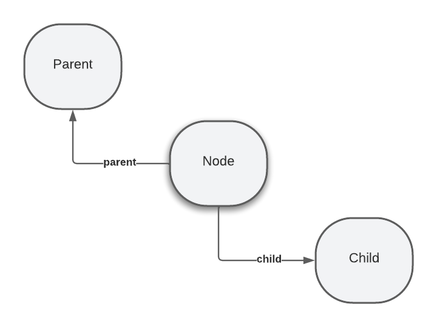

Copyright ...
Metadata Representation
Nodes
Nodes represent entities and provide the structure to data within the HMF model. They provide
identity and type, as well as relationships to other nodes. It is through nodes that
content hierarchies are formed, with one node able to act as a parent or
container for another node.

Nodes with parent and child relationships
Nodes have a single parent relationship to their parent node, and
zero-or-more
child nodes.
A child is affected by its parent and ancestors in various ways. For example, copy and
move operations on a node will recursively copy the node's descendents (see
[[[#move-copy]]]). Permissions applied within a repository to a parent will cascade to
descendents. The versioning strategy applied to a node will govern the read-only status
of a child when the parent is checked-in (see [[[#versioning-semantics]]]).
Nodes also act as a container for properties as described in [[[#properties]]].
All nodes carry a small set of mandatory properties (see [[[#mandatory-properties]]]).
Node Names
Each node has a name used to locate the node among its siblings. The
node
name is used within paths to allow nodes to be located without knowing their
identity. See [[[#names]]] for a full description of names.
Node Identity
Relying on a path to locate a node could be problematic when we consider that
nodes can be moved. In cases where a node must be retrievable irrespective of
its location in the hierarchy, we may rely instead on node identity.
A node that can be retrieved using its identity is said to be referenceable.
Storage systems would typically use an index to quickly locate a referenceable
node within a repository. Maintaining such an index incurs a cost in terms of
resources
and performance as it would need to be stored and maintained within the storage system. It
becomes therefore a design choice as to whether a given node should be referenceable.
Nodes can be related to one another via references as described in
[[[#references]]].
Node identity is used to support references as only nodes
that are referenceable can be referred to from a node.
If a given node has the mixin type (see [[[#primary-mixin-types]]]) of
mixin:referenceable then the node is referenceable.
Referenceable nodes acquire the property
lhd:uuid from the mixin:referenceable type which holds a universally
unique
repository-managed identifier.
This identifier may be used outside of a repository to reference the node and
acts as the value of reference properties (see [[[#references]]]).
Mandatory Properties
All nodes contain the following mandatory properties:
| Name |
Type IRI |
Description |
hmf:primaryType |
type:string |
The compact IRI of a node's primary type (see
[[[#primary-mixin-types]]])
|
Properties
Properties belong to nodes and hold the data or values associated with
that node. A property consists of a name as defined in [[[#names]]] and zero
or more values of a specific type.
The type of a property determines the range of values it can store and is defined
by
a datatype IRI. The following standard types are available, although a repository
may choose to support additional types:
| Prefix |
Datatype IRI |
Description |
| string |
type:string |
A sequence of characters encoded as UTF-8 |
| boolean |
type:boolean |
The value of true or false |
| long |
type:long |
An integer with a minimum value of -263 and a maximum value of
2^63-1.
|
| double |
type:double |
A double-precision 64-bit IEEE 754 floating point.
|
| decimal |
type:decimal |
... |
| date |
type:date |
An [[ISO8601]] date |
| weakreference |
type:weakreference |
An identifer to a referenceable node without enforced referential integrity. |
| reference |
type:reference |
An identifer to a referenceable node with enforced referential integrity. |
| uri |
type:uri |
A sequence of characters that conform to [[RFC3987]] |
Multi-value Properties
Properties can either be single-valued or multi-valued.
A single-value property, if it exists, must have a value. There is no such thing as a null
value. A multi-value property can have zero or more values. Again there is no such thing as a null
value, however a multi-value property can be empty, just as an array can be empty.
Whether a particular property is a multi-valued property is governed by the property definition
applicable to it, which is determined by the node type of the property's parent node (see
[[[#node-types]]]).
Array Semantics
The values stored within a multi-valued property are all of the same type. A multi-valued
property
by default has array semantics. That is, they are ordered and may contain
duplicate values.
Set Semantics
A multi-value property can be declared to have set semantics. In this case, the
property
will only every contain unique values and there will be no defined ordering.
Names & Namespaces
Names in HMF are conceptually the same as
names in [[XML]]. They consist of a namespace IRI (or the empty string in the case of
[[[#empty-namespace]]]) and a local name, and are written in their expanded form as
{NAMESPACE}LOCAL_NAME, for example:
{http://hmf.org/ns/hmf/1.0}primaryType
NAMESPACE is either the empty string "" or a namespace IRI that
identifies the namespace and must be registered within the HMF storage layer before it is used.
Namespaces are registered along with a prefix allowing names to be
written in their compact form; PREFIX:LOCAL_NAME, for example:
hmf:primaryType
The compact form of a name is commonly used, however a namespace mapping of prefixes
to namespace IRIs must be supplied.
[[XML]] and [[RDF-CONCEPTS]] both use resource identifiers as names but in subtly different
ways.
In [[XML]] a name is an ordered pair consisting of a namespace IRI and a
local
name
which is commonly written in the form namespace:local name. A namespace IRI
must be formally declared before its corresponding prefix may be used and there
is no explicit formal specification for how a pair should be treated or expressed.
In contrast, [[RDF-CONCEPTS]] states that subjects are represented with an IRI which can be
conveniently
written as a compact IRI in the form prefix:suffix. In [[RDF-CONCEPTS]],
this compact IRI can be expanded via simple concatentation to reveal the subject IRI,
with
no deterministic way to return to the compact IRI form.
The absence of a formal definition
of namespaces in [[RDF-CONCEPTS]] means that a document could contain overlapping prefixes where
different compact IRIs expand to the same IRI during concatenation, thus mangling their
namespaces.
HMF chooses to follow [[XML]] defining a
name as an ordered pair and provides a namespace registry to map prefixes
to their namespace IRIs. The result is that all names belong to a specific
namespace.
Naming Restrictions
The characters declared invalid within a local name (“/”, “:”, “[“, “]”, “|”, “*”) represent only those
characters which are used as metacharacters in JCR names, paths and name-matching patterns (see §5.2.2
Iterating Over Child Items). These restrictions are not necessarily sufficient to enforce best practices
in
the creation of JCR names. In particular, the minimal grammar defined here permits JCR names with
leading
and trailing whitespace as well as characters which may appear superficially identical while
representing
different code points, creating a potential security issue.
The Empty Namespace
For trivial or single-source metadata applications, enforcing a namespace could be overly
burdensome. HMF provides a permanent default
namespace with prefix "" (i.e. the empty string), also referred to as the
empty namespace. This allows names to omit the prefix and be located using their
local name only.
Relationships
Parent-Child Relationships
HMF has first-class support for
parent-child
relationships between nodes. Parent-child relationships have additional semantics beyond what are
provided for regular [[[#references]]]. For example, a child is considered to belong to its parent, meaning
that re-locating the parent also relocates the child. Versioning a parent in many cases will also version
the child. A parent's type may also enforce that it has a child with a given name and
type.
Parent-child relationships can be said to define the tree structure metadata.
Trees allow paths to be used to locate a node. Paths can only
be used to traverse parent-child relationships and do not apply to references.
Nodes can be referenced either using their identity or using their location as defined
by their path from the root to the node.
[[[#primary-child]]] allows clients to navigate through parent-child relationships without
knowing the names of the intermediate
First class support in type system (schemas can declare child types)
HMF does not support same name siblings.
That is, all children must have a unique name.
References
* weak and strong references
* Reference
* Versioned Reference
Primary Child
A [[[#node-type]]] can declare one of its children as primary, meaning that for all nodes of
that type, that child is accessible in a way that does not require the name of the item. Primary children
allow clients to traverse a tree without upfront knowledge of the node structure.
A client could for example know to traverse a tree"s primary children until a node of
a given type or name is encountered. This would allow editors to modify a tree"s
structure, perhaps be adding or removing intermediate nodes, without breaking the client.
Item Annotations
For a given node, all items (i.e. child nodes and properties) can themselves
have properties. This allows the HMF
model to store so-called statement-level metadata capturing information about
metadata that is incidental or orthogonal to its primary domain. Popular use cases for
applying and statement-level metadata include certainty scores, weights, temporal
restrictions, permissions and provenance information.
The two popular graph-based data models have been RDF [[RDF11-CONCEPTS]] and
Labeled-property
Graphs,
which are roughly similar, with the RDF model being more formal in identifying nodes,
datatypes and relationships, while Property Graphs
use a less formal relationship model somewhat similar to JSON. In both models,
nodes are related via edges (AKA arcs), but in Property Graphs,
those edges may themselves be annotated with properties.
This is useful in providing additional metadata and semantics to relationships
of the nodes.
HMF takes a hybrid approach
by providing a formal model for identifying information pertain to the primary domain
whilst capturing annotations
Annotations are considered as part of a node"s versionable tree.
Standard Annotations
* Collection semantics - array or set
* Created By
* Created
* Modified By
* Modified
Paths
Identity Paths
All items can be located using a path which describes the location of that
item from the root via parent-child relationships. The path consists of the
name of each interceding node in order from root to target item, much like a
file system path.
Relative paths can also be used to describe the location of one item with respect to another.
http://acme.org/ids/15247995-1f1d-4f91-893a-3893bce03243
http://acme.org/ids/15247995-1f1d-4f91-893a-3893bce03243#prefix:local_name
http://acme.org/ids/15247995-1f1d-4f91-893a-3893bce03243#%7Bhttp%3A%2F%2Fhmf.org%2Fns%7Dtitle